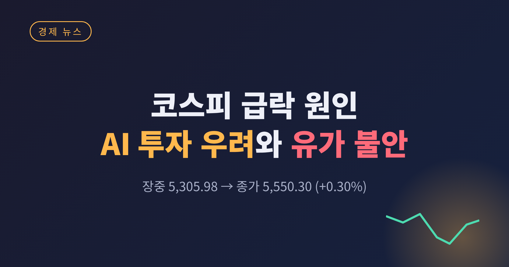
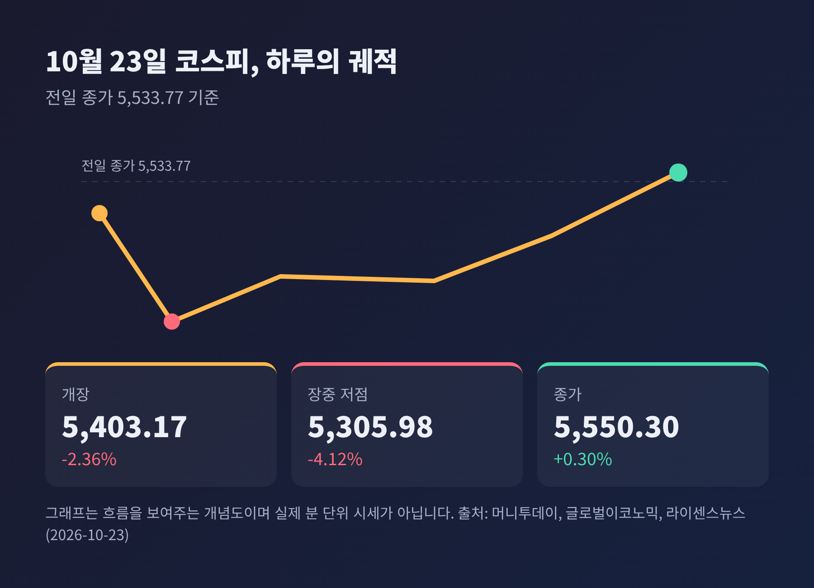
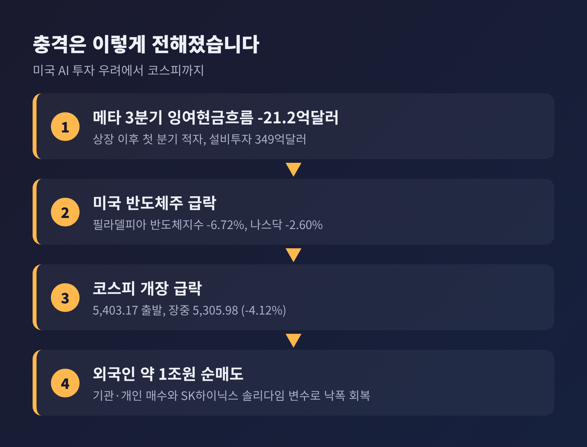
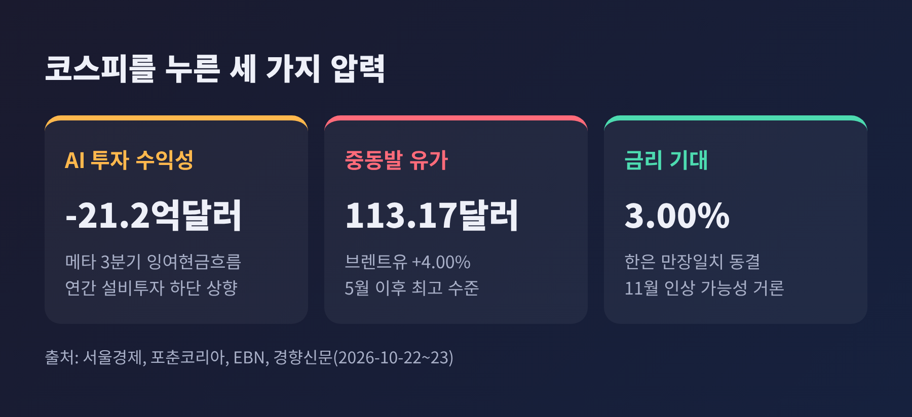
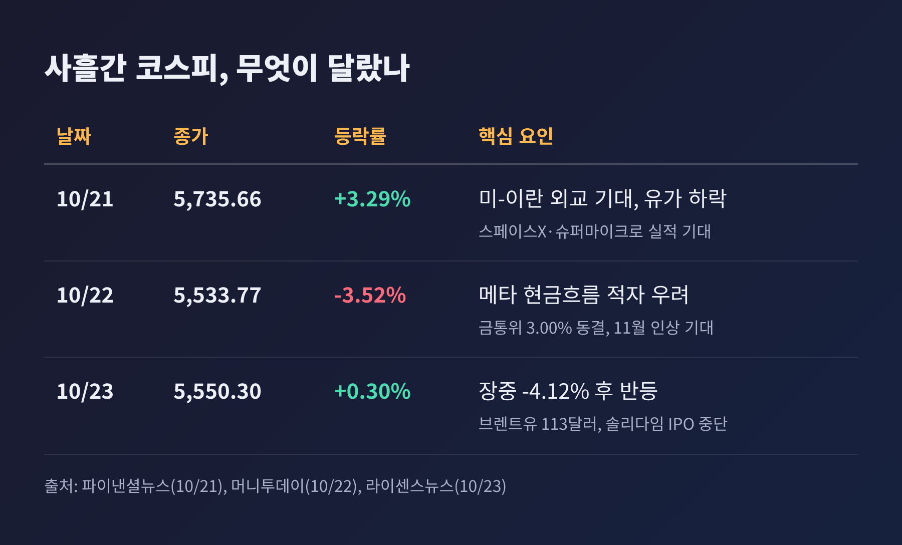
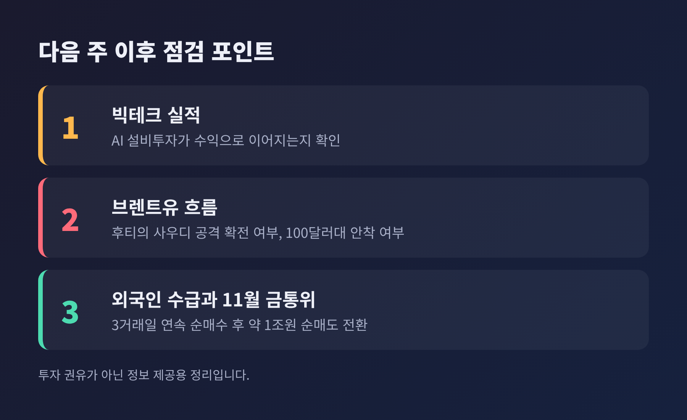

코스피 급락 원인, AI 투자 수익성 우려와 유가 불안이 겹친 하루

3줄 요약 - 10월 23일 코스피는 장중 5,305.98까지 밀려 4% 넘게 떨어졌으나, 5,550.30(+0.30%)으로 마감했습니다. - 발단은 메타의 3분기 잉여현금흐름 적자(-21.2억달러)가 불러온 AI 투자 수익성 우려와 브렌트유 113달러 급등이었습니다. - 국내 변수는 SK하이닉스의 솔리다임 IPO 중단과 전날 3.00%로 동결된 한국은행 금통위였습니다.
이번 글에서는 10월 23일 코스피 급락의 배경을 정리해 보겠습니다. 장중 낙폭과 종가가 크게 달랐던 하루인 만큼, 무엇이 지수를 흔들었고 무엇이 되돌렸는지 나누어 살펴봅니다.
무슨 일이 있었나: 장중 5,300선, 종가는 플러스
금요일 코스피는 5,403.17에 문을 열었습니다. 전 거래일보다 130.60포인트(2.36%) 낮은 출발이었고, 7월 29일 이후 처음으로 장중 5,400선을 내줬습니다. 개장 직후에는 5,305.98까지 내려가 낙폭이 4.12%에 달했습니다.
그런데 마감 성적표는 달랐습니다. 지수는 종료 20분쯤 전에 플러스로 돌아섰고, 5,550.30(+0.30%)에 거래를 마쳤습니다. 삼성전자는 5% 넘는 하락(203,500원)으로 출발해 215,500원(+0.47%)으로, SK하이닉스는 장 초반 4% 넘게 밀렸다가 1,277,000원(+4.42%)으로 끝났습니다.
다만 표면의 숫자가 전부는 아닙니다. 코스피 상승 종목은 173개, 하락 종목은 719개였습니다. 반도체 대형주가 지수를 끌어올렸을 뿐, 시장 전반은 여전히 약했던 셈입니다. 코스닥은 751.69로 1.62% 내려 이틀 연속 하락했습니다.

왜 흔들렸나: 메타의 현금흐름 적자가 던진 질문
시작점은 미국이었습니다. 22일(현지) 나스닥은 2.6% 하락했고, 필라델피아 반도체지수는 종가 기준 6.72%, 장중에는 최대 7%까지 빠졌습니다. 인텔 -8.04%, 마이크론 -6.26%, 엔비디아 -4.40%였고, SK하이닉스 ADR도 8.07% 떨어졌습니다.
방아쇠는 메타의 3분기 실적이었습니다. 매출은 646억달러로 26% 늘어 시장 예상(633억달러)을 웃돌았습니다. 하지만 잉여현금흐름은 -21.2억달러였습니다. 1년 전 106억달러 흑자였고 2분기에도 7.8억달러 흑자였으니, 2012년 상장 이후 첫 분기 적자라는 점이 무겁게 읽혔습니다.
원인은 설비투자입니다. 3분기 설비투자는 349억달러로 1년 전(194억달러)의 1.8배에 이릅니다. 연간 설비투자 전망의 하단도 1,300억달러에서 1,350억달러로 올렸습니다. 여기에 2027년 1월 의결권 없는 클래스C 주식을 새로 발행해 AI 확장 자금을 마련하겠다는 계획까지 나왔습니다.
메타의 약정 규모는 약 8,250억달러로 보도됐고, 5년 CDS 프리미엄은 역대 최고 수준까지 올랐습니다. 미래에셋증권 서상영 이사는 이를 두고 회사의 부채 부담이 신용시장에 나타나기 시작한 것이라고 해석했습니다. 메타 주가는 6.98% 하락해 하루에 시가총액 약 1,240억달러(약 164조원)가 사라졌습니다.
공정하게 보면 한쪽 면만 있지는 않습니다. 순이익 부진에는 청소년 정신건강 소송 합의 비용(약 100억달러)이 크게 작용했습니다. 저커버그는 "우리의 투자는 성과를 내고 있으며 핵심 사업은 탄탄하다"고 밝혔습니다. 모건스탠리의 티루파투르는 차입비용이 100bp 올라도 AI 설비투자가 멈추지는 않겠지만, AI 생태계 하단의 일부 차입자는 어려워질 수 있다고 짚었습니다. 문제는 AI 수요가 아니라, 돈을 쓰는 속도와 돈을 버는 속도의 간격이라는 뜻입니다.

유가와 금리: 두 번째, 세 번째 압력
같은 날 유가가 겹쳤습니다. 22일 브렌트유는 4% 오른 배럴당 113.17달러로 5월 이후 최고였고, WTI도 99.47달러로 2.39% 올랐습니다. 예멘 후티 반군이 사우디 곳곳을 공격했다는 소식이 이어졌고, 아람코가 다란 본사 직원들에게 대피를 지시했다는 보도도 나왔습니다. 호르무즈 해협에 이어 홍해 길목까지 위협받는 상황입니다.
이란과의 관계는 조심스럽게 볼 필요가 있습니다. 후티는 친이란 성향의 반군으로 알려져 있으나, 이번 공격을 이란이 직접 지시했다는 내용은 확인되지 않았습니다. 다만 중동 전반의 긴장이 유가에 반영되고 있다는 점은 분명합니다. 신영증권 이상연 연구원은 유가가 100달러 근처에 머무는 한 코스피가 추세적으로 오르기 어렵다고 진단했습니다.
금리도 변수입니다. 한국은행 금융통화위원회는 22일 기준금리를 3.00%로 만장일치 동결했습니다. 7월과 8월 두 차례 올린 뒤 숨을 고른 셈이지만, 신현송 총재는 물가가 목표 2%에 이를 때까지 긴축 기조를 이어가겠다는 취지로 말했습니다. 시장은 11월 추가 인상(3.25%) 가능성을 열어 두고 있습니다. 유가가 오르면 물가 부담이 커지고, 물가 부담이 커지면 추가 인상 압력도 커집니다.

10월 21일의 반등과 무엇이 다른가
이틀 전 흐름과 비교하면 이번 급락의 성격이 보입니다. 21일 코스피는 3.29% 올라 5,735.66으로 마감했고, 장중 5,816.43에서는 매수 사이드카까지 발동됐습니다. 당시에는 미국과 이란의 외교 진전 기대로 유가가 내렸고, 스페이스X와 슈퍼마이크로의 실적이 AI 투자 심리를 달랬습니다.
예전엔 AI 투자 확대가 곧 반도체 수혜로 읽혔습니다. 지금은 투자 확대가 현금흐름과 부채 부담으로 돌아오는지를 먼저 묻는 시장입니다. 같은 AI 이야기가 이틀 사이 호재에서 부담으로 바뀐 이유입니다.
22일에는 코스피가 3.52% 내려 5,533.77에 마감했습니다. 23일의 5,550.30은 이틀 전 종가(5,735.66)보다 여전히 낮은 자리입니다. 장중 한때 이달 낙폭이 20% 안팎이라는 집계도 나왔고, 투자자 예탁금은 9개월 만의 최저 수준(89.63조원)이었습니다.

무엇이 버텼나: 개인·기관 매수와 솔리다임 변수
낙폭을 줄인 힘은 국내 수급이었습니다. 외국인은 약 1조원을 순매도했습니다. 그러나 기관이 약 8,700억원, 개인이 약 500억원을 순매수했습니다. 개인은 지수가 5,300선에 가까워질 때 적극적으로 매수한 것으로 분석됩니다.
SK하이닉스의 결정도 한몫했습니다. 장 시작 전 자회사 솔리다임의 프리IPO와 미국 상장 검토를 중단한다고 공시했습니다. 시장이 이중상장과 주주가치 희석을 걱정해 왔기에, 불확실성이 줄어든 효과가 있었습니다. 회사는 솔리다임의 성장성이 달라진 것이 아니라 현재 시장 여건을 반영한 결정이라고 설명했습니다.
한계도 있습니다. 반등의 상당 부분이 개별 호재와 저가 매수에 기댔기 때문입니다. 키움증권 한지영 연구원은 전날 메타 악재가 일부 선반영됐고 과매도 구간이라는 점이 반등 여지가 된다고 봤습니다. 반면 신한투자증권 강진혁 연구원은 밸류에이션 매력이 단기 바닥을 보장하지는 않는다고 경계했습니다.
앞으로 무엇을 볼 것인가
첫째는 다음 주 빅테크 실적입니다. 메타 한 곳의 부담이 업종 전체의 문제인지, 개별 기업의 문제인지가 가려질 것입니다. 빅테크의 AI 인프라 설비투자는 2025년 4,040억달러에서 2026년 7,900억달러, 2027년 1조2,000억달러로 불어날 것으로 전망됩니다. 이 돈이 수익으로 돌아온다는 확인이 필요합니다.
둘째는 유가입니다. 후티의 사우디 공격이 확전될지, 브렌트유가 100달러대에서 안정될지에 따라 물가와 금리 경로가 달라집니다.
셋째는 외국인 수급과 11월 금통위입니다. 외국인이 3거래일 연속 순매수를 마치고 다시 순매도로 돌아선 만큼, 흐름이 이어지는지 지켜볼 필요가 있습니다.

정리하면 이렇습니다. 이번 하루는 "AI 투자는 얼마나 벌어야 정당화되는가"라는 질문이 유가와 금리 부담을 만나 시장에 던져진 사건이었습니다. 지수는 제자리로 돌아왔지만, 질문은 아직 답을 얻지 못했습니다.
변동성이 큰 장세에서는 하루의 종가보다 그 하루가 남긴 질문을 읽는 편이 오래 남는다고 생각합니다. 다음 주 빅테크 실적이 그 질문에 어떤 답을 내놓을지 차분히 지켜보시길 권합니다.
※ 이 글은 시장 상황을 해설하기 위한 정보 제공용이며, 특정 종목이나 상품의 매수·매도를 권유하는 투자 권유가 아닙니다. 투자 판단과 그에 따른 책임은 투자자 본인에게 있습니다. 수치는 2026년 10월 23일 오후 보도 기준이며 매체별로 일부 차이가 있을 수 있습니다.